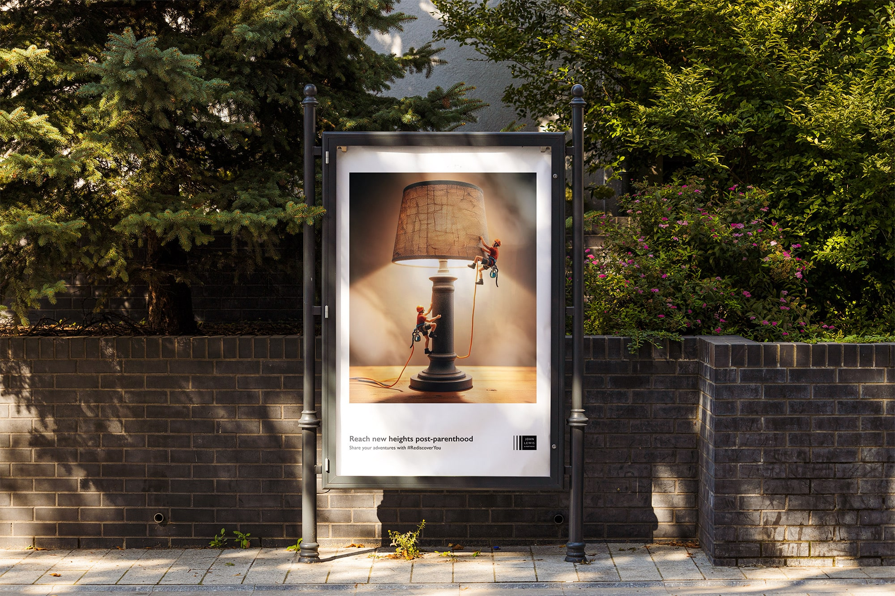
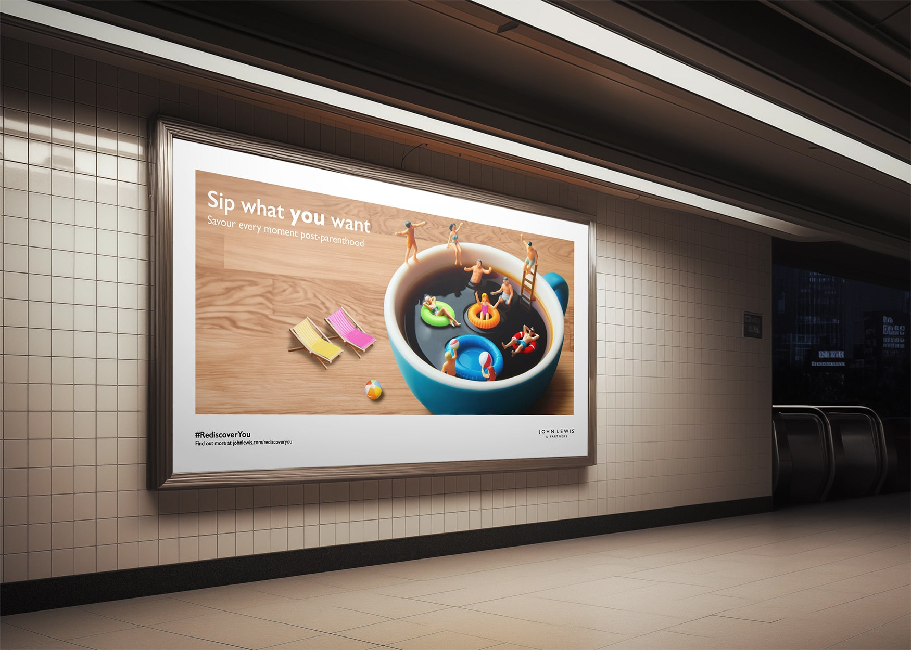
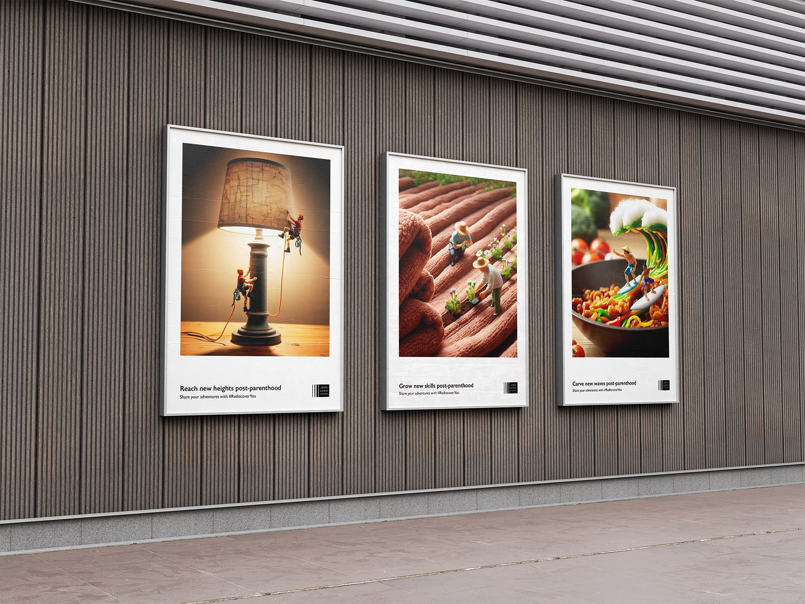
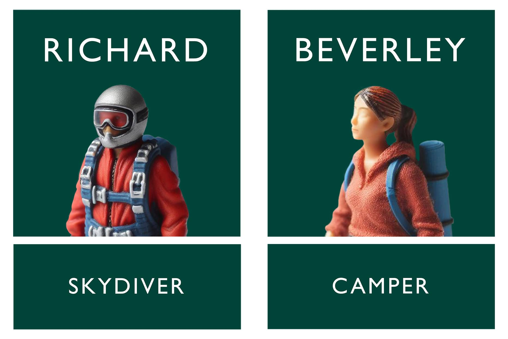

January 2024
Concept Project
Rediscover You.
Working on a team with two others, we created a campaign using miniature figures and AI generated art to conquer loneliness using John Lewis' tone of voice.
Creatives
The campaign video.
Click below to find out how this project is helping older people feel less lonely.
The billboards.
Using a miniature world to make a big difference.




Finding the campaign digitally.
A website take-over with events that older people can go to and connect with others at.
The John Lewis website was redesigned to promote the campaign, with "little meet-ups" as the campaign's solution to helping those lost parents find something new to do in their lives.


The social media promoted stories and presented the visuals and typography in a beautiful way that would help the campaign bring in more attention.
Staff Uniform.
Expanding the mini-figure world.

